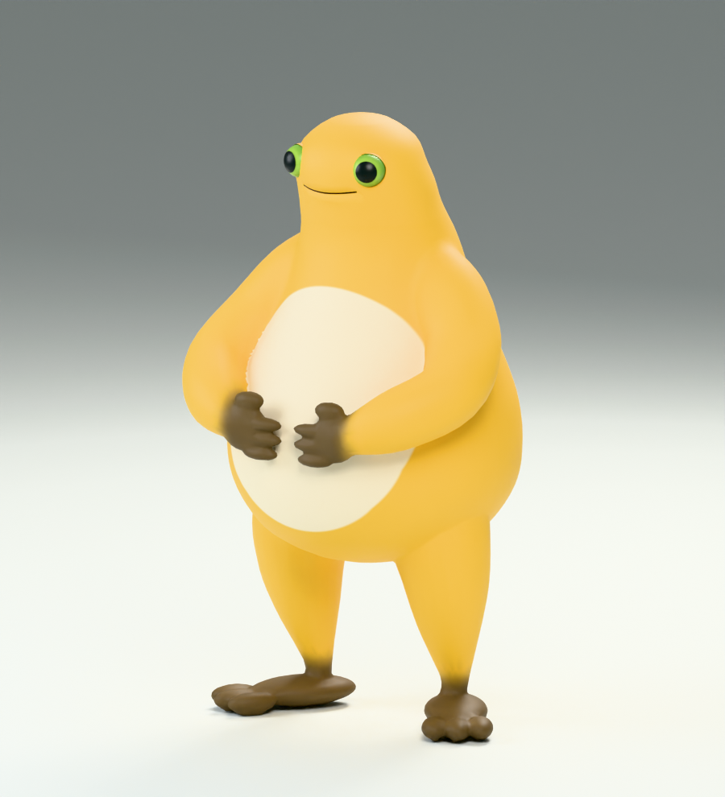
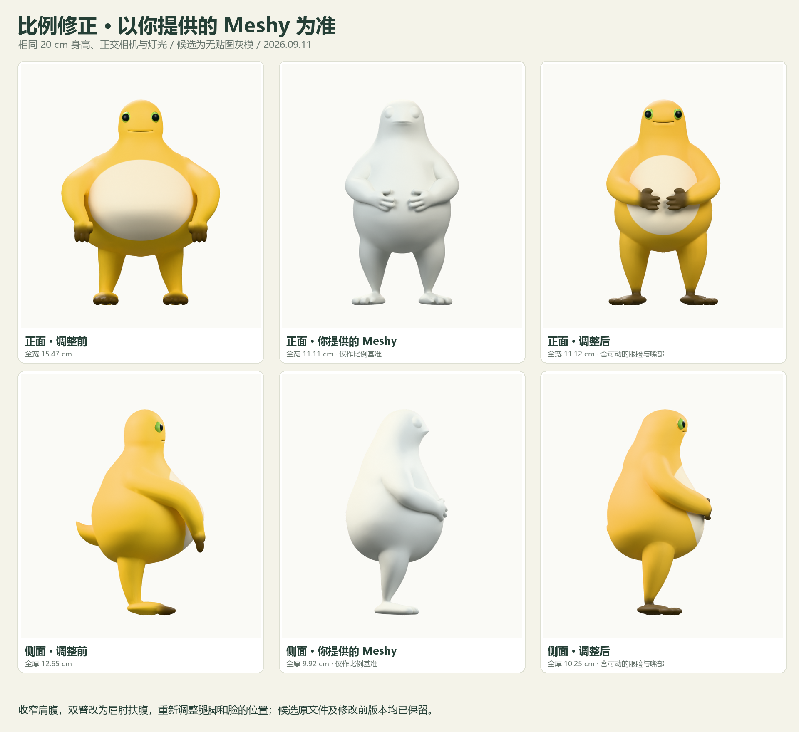
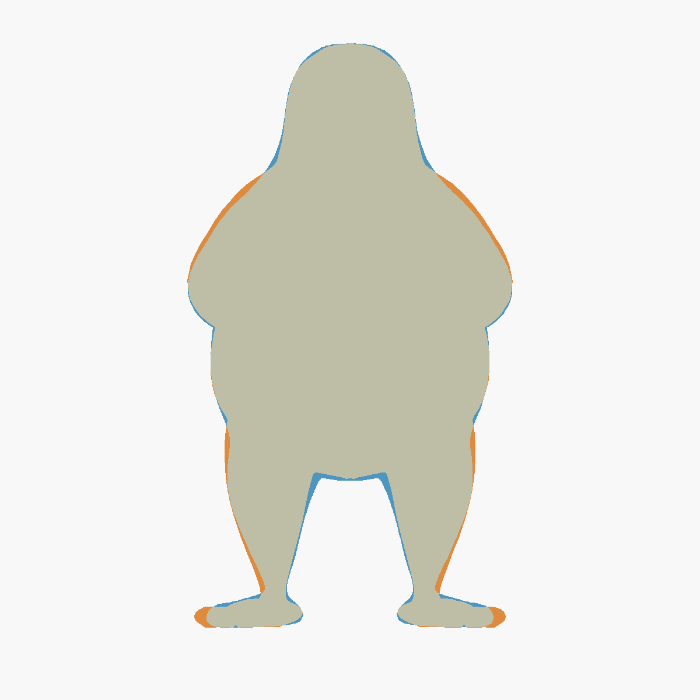
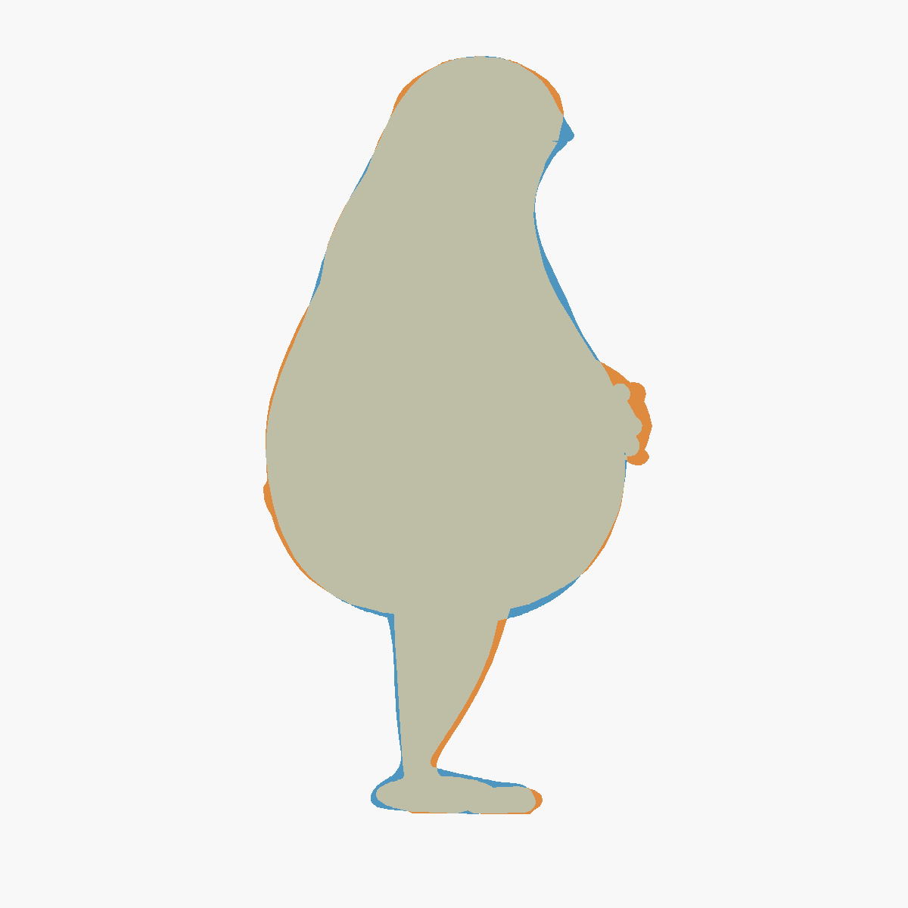
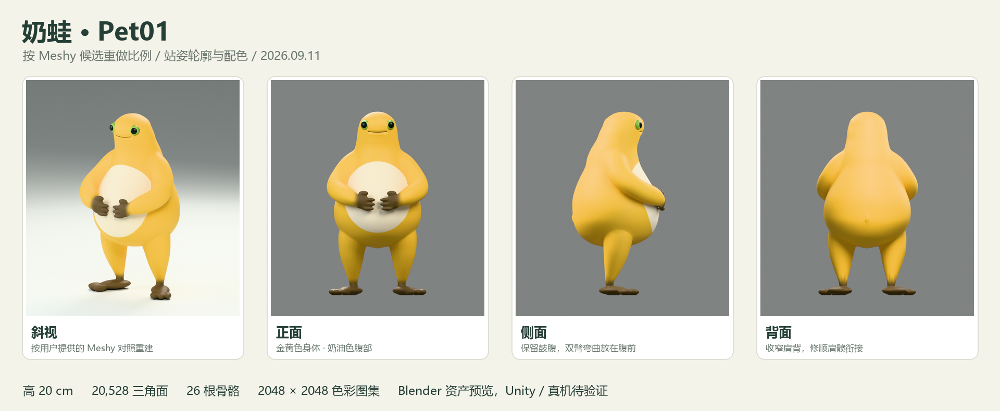
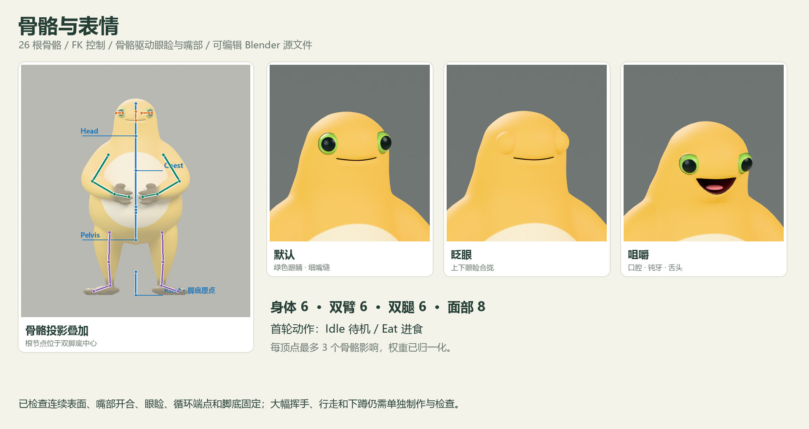
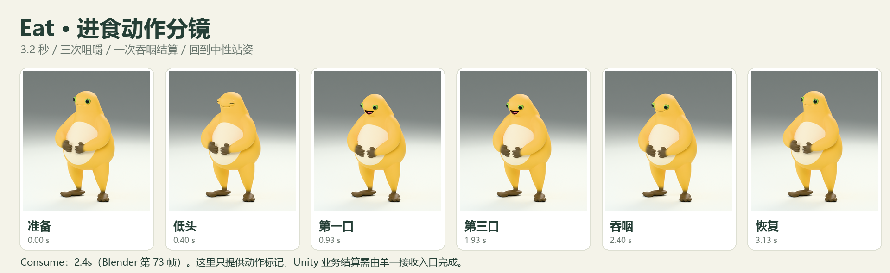

按 Meshy 候选重做比例 · 2026.09.11
依据你提供的 Meshy 模型，收窄肩腹、改为屈肘扶腹，并重新调整腿脚站姿和脸的位置。配色继续参考 奶蛙图片。

轻微呼吸、眨眼和摆尾，循环播放。
预览为无声视频。眼睑和嘴部由骨骼控制。

灰色为重合，蓝色为候选多出的部分，橙色为当前模型多出的部分。此图只用于检查轮廓差异。





2.4 秒是唯一建议结算时刻。Blender 标记尚未接入 Unity 业务事件，重复投喂和跟踪恢复规则需在游戏逻辑中实现。